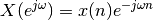

Welcome to MyProject’s documentation!¶
Example¶
example main¶
This is the docstring for the example.py module. Modules names should have short, all-lowercase names. The module name may have underscores if this improves readability.
Every module should have a docstring at the very top of the file. The module’s docstring may extend over multiple lines. If your docstring does extend over multiple lines, the closing three quotation marks must be on a line by itself, preferably preceded by a blank line.
-
example.example.foo(var1, var2, long_var_name='hi')[source]¶ A one-line summary that does not use variable names or the function name.
Several sentences providing an extended description. Refer to variables using back-ticks, e.g. var.
Parameters: - var1 : array_like
Array_like means all those objects – lists, nested lists, etc. – that can be converted to an array. We can also refer to variables like var1.
- var2 : int
The type above can either refer to an actual Python type (e.g.
int), or describe the type of the variable in more detail, e.g.(N,) ndarrayorarray_like.- long_var_name : {‘hi’, ‘ho’}, optional
Choices in brackets, default first when optional.
Returns: - type
Explanation of anonymous return value of type
type.- describe : type
Explanation of return value named describe.
- out : type
Explanation of out.
- type_without_description
Other Parameters: - only_seldom_used_keywords : type
Explanation
- common_parameters_listed_above : type
Explanation
Raises: - BadException
Because you shouldn’t have done that.
See also
otherfunc- relationship (optional)
newfunc- Relationship (optional), which could be fairly long, in which case the line wraps here.
thirdfunc,fourthfunc,fifthfuncNotes
Notes about the implementation algorithm (if needed).
This can have multiple paragraphs.
You may include some math:

And even use a greek symbol like inline.
References
Cite the relevant literature, e.g. [1]. You may also cite these references in the notes section above.
[1] (1, 2) O. McNoleg, “The integration of GIS, remote sensing, expert systems and adaptive co-kriging for environmental habitat modelling of the Highland Haggis using object-oriented, fuzzy-logic and neural-network techniques,” Computers & Geosciences, vol. 22, pp. 585-588, 1996. Examples
These are written in doctest format, and should illustrate how to use the function.
>>> a = [1, 2, 3] >>> print [x + 3 for x in a] [4, 5, 6] >>> print "a\n\nb" a b
example2¶
Example NumPy style docstrings.
This module demonstrates documentation as specified by the NumPy Documentation HOWTO. Docstrings may extend over multiple lines. Sections are created with a section header followed by an underline of equal length.
Example¶
Examples can be given using either the Example or Examples
sections. Sections support any reStructuredText formatting, including
literal blocks:
$ python example2.py
Section breaks are created with two blank lines. Section breaks are also implicitly created anytime a new section starts. Section bodies may be indented:
Notes¶
This is an example of an indented section. It’s like any other section, but the body is indented to help it stand out from surrounding text.
If a section is indented, then a section break is created by resuming unindented text.
Attributes¶
- module_level_variable1 : int
Module level variables may be documented in either the
Attributessection of the module docstring, or in an inline docstring immediately following the variable.Either form is acceptable, but the two should not be mixed. Choose one convention to document module level variables and be consistent with it.
-
class
example.example2.ExampleClass(param1, param2, param3)[source]¶ The summary line for a class docstring should fit on one line.
If the class has public attributes, they may be documented here in an
Attributessection and follow the same formatting as a function’sArgssection. Alternatively, attributes may be documented inline with the attribute’s declaration (see __init__ method below).Properties created with the
@propertydecorator should be documented in the property’s getter method.Attributes: - attr1 : str
Description of attr1.
- attr2 :
int, optional Description of attr2.
Methods
example_method(param1, param2)Class methods are similar to regular functions. -
attr3= None¶ Doc comment inline with attribute
-
attr4= None¶ list(str): Doc comment before attribute, with type specified
-
attr5= None¶ str: Docstring after attribute, with type specified.
-
example_method(param1, param2)[source]¶ Class methods are similar to regular functions.
Parameters: - param1
The first parameter.
- param2
The second parameter.
Returns: - bool
True if successful, False otherwise.
-
readonly_property¶ str: Properties should be documented in their getter method.
-
readwrite_property¶ list(str): Properties with both a getter and setter should only be documented in their getter method.
If the setter method contains notable behavior, it should be mentioned here.
-
exception
example.example2.ExampleError(msg, code)[source]¶ Exceptions are documented in the same way as classes.
The __init__ method may be documented in either the class level docstring, or as a docstring on the __init__ method itself.
Either form is acceptable, but the two should not be mixed. Choose one convention to document the __init__ method and be consistent with it.
Parameters: - msg : str
Human readable string describing the exception.
- code :
int, optional Numeric error code.
Attributes: - msg : str
Human readable string describing the exception.
- code : int
Numeric error code.
-
example.example2.example_generator(n)[source]¶ Generators have a
Yieldssection instead of aReturnssection.Parameters: - n : int
The upper limit of the range to generate, from 0 to n - 1.
Yields: - int
The next number in the range of 0 to n - 1.
Examples
Examples should be written in doctest format, and should illustrate how to use the function.
>>> print([i for i in example_generator(4)]) [0, 1, 2, 3]
-
example.example2.function_with_types_in_docstring(param1, param2)[source]¶ Example function with types documented in the docstring.
`PEP 484`_ type annotations are supported. If attribute, parameter, and return types are annotated according to `PEP 484`_, they do not need to be included in the docstring:
Parameters: - param1 : int
The first parameter.
- param2 : str
The second parameter.
Returns: - bool
True if successful, False otherwise.
- .. _PEP 484:
-
example.example2.module_level_function(param1, param2=None, *args, **kwargs)[source]¶ This is an example of a module level function.
Function parameters should be documented in the
Parameterssection. The name of each parameter is required. The type and description of each parameter is optional, but should be included if not obvious.If
*argsor**kwargsare accepted, they should be listed as*argsand**kwargs.The format for a parameter is:
name : type description The description may span multiple lines. Following lines should be indented to match the first line of the description. The ": type" is optional. Multiple paragraphs are supported in parameter descriptions.
Parameters: - param1 : int
The first parameter.
- param2 :
str, optional The second parameter.
- *args
Variable length argument list.
- **kwargs
Arbitrary keyword arguments.
Returns: - bool
True if successful, False otherwise.
The return type is not optional. The
Returnssection may span multiple lines and paragraphs. Following lines should be indented to match the first line of the description.The
Returnssection supports any reStructuredText formatting, including literal blocks:{ 'param1': param1, 'param2': param2 }
Raises: - AttributeError
The
Raisessection is a list of all exceptions that are relevant to the interface.- ValueError
If param2 is equal to param1.
-
example.example2.module_level_variable2= 98765¶ int: Module level variable documented inline.
The docstring may span multiple lines. The type may optionally be specified on the first line, separated by a colon.